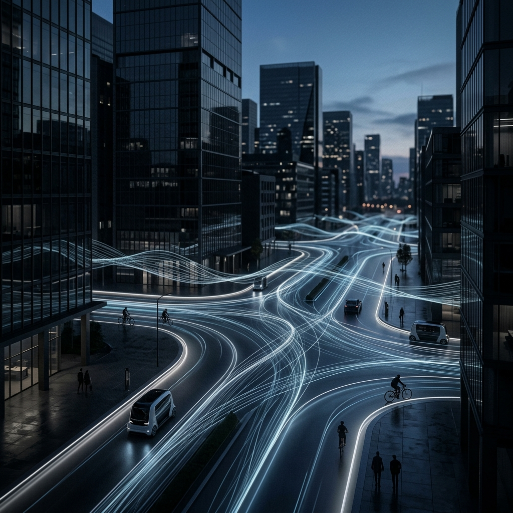
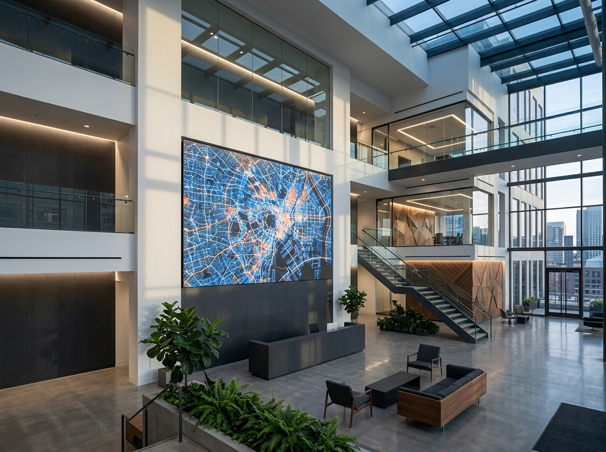
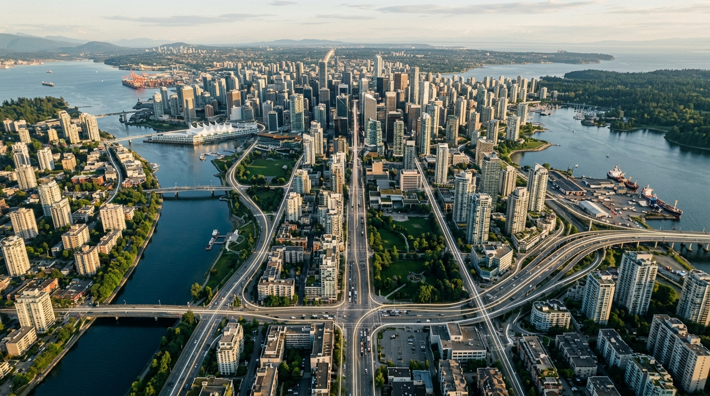
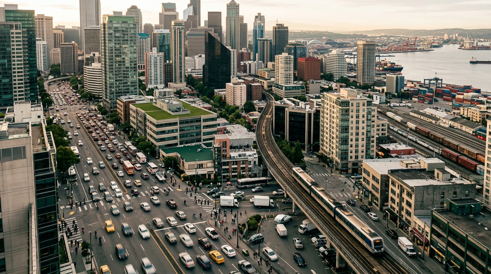
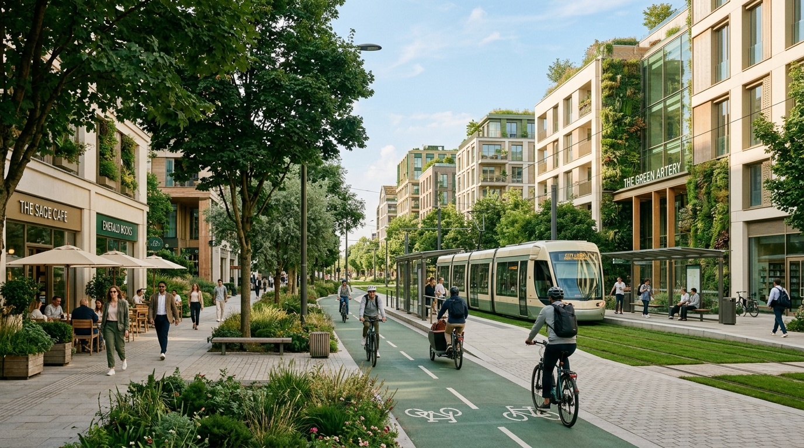
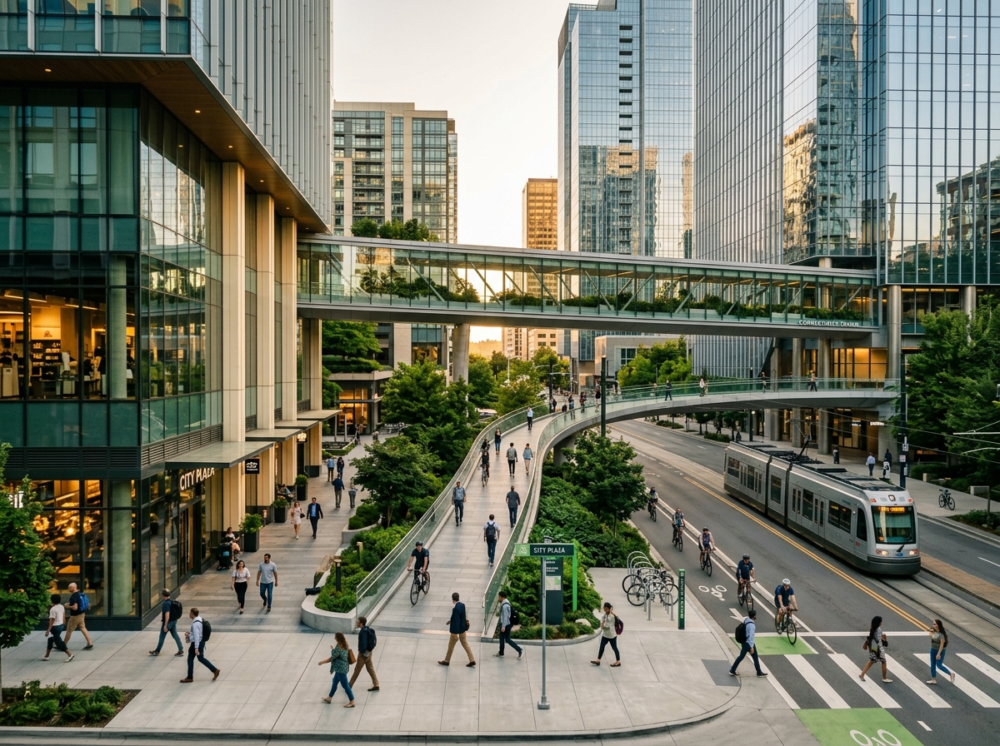
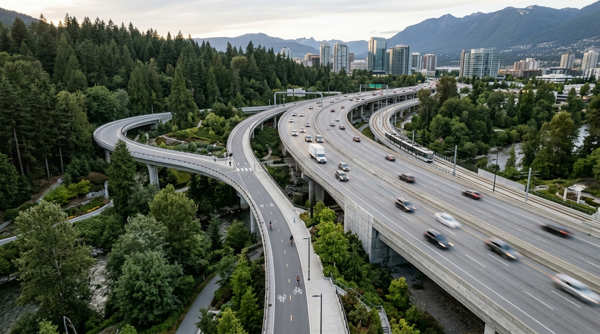
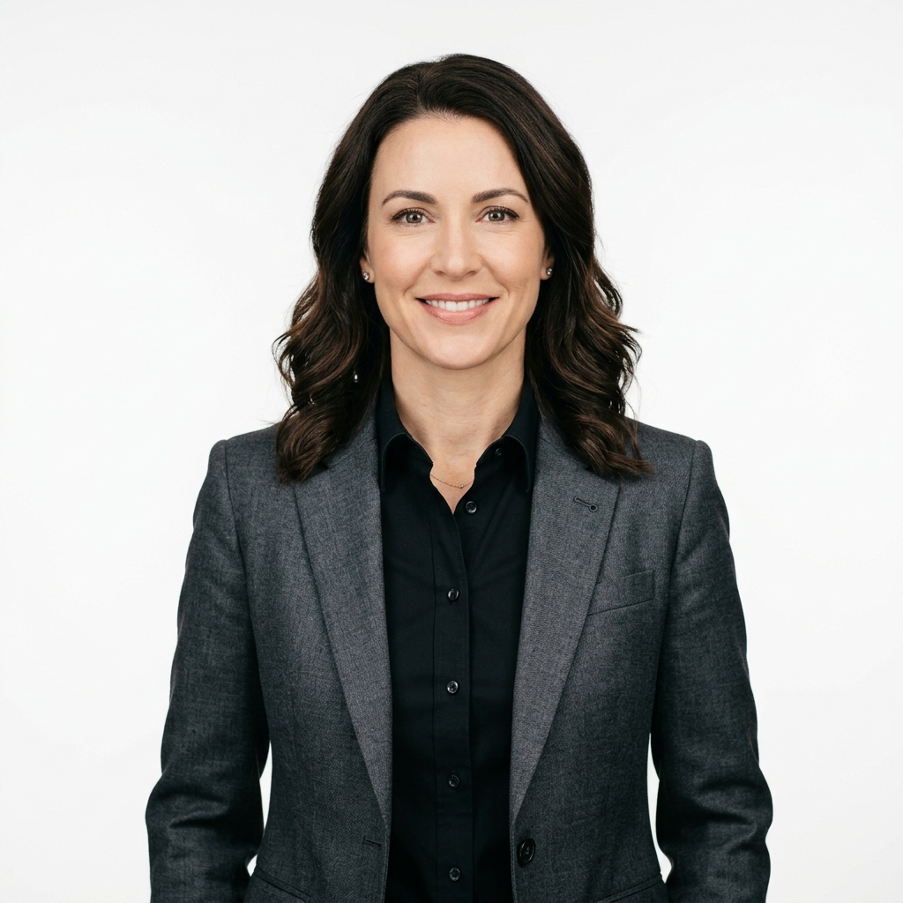

Frictionless Movement.
Zero-Carbon Future.
Making urban delivery flow as seamlessly as internet data transmission. Miracle Flow AI engineers intelligent technology to eliminate physical friction, enabling true zero-carbon movement across metropolitan landscapes.
Making urban delivery flow as seamlessly as internet data transmission.

MISSION
We are fundamentally rethinking how objects move through the physical world. While the digital landscape operates on instant, frictionless data transfer, physical logistics remain bottlenecked by traffic, inefficient routing, and heavy carbon output.
Our mission is to eliminate these physical barriers entirely. By applying intelligent software orchestration to the chaos of urban environments, we are engineering a true zero-carbon reality—where metropolitan delivery happens effortlessly, invisibly, and seamlessly in the background of everyday life.
The future of urban logistics, reimagined.
Miracle Flow AI is founded on a singular business concept: making urban delivery flow as seamlessly as internet data transmission. In the digital world, data moves instantly without friction. We believe physical movement should operate with that exact same efficiency.
By bridging the gap between digital data flow and physical delivery, we are actively engineering the transition to frictionless movement. Our focus is completely dedicated to eliminating the inefficiencies of traditional urban logistics, ultimately paving the way for a zero-carbon reality where metropolitan delivery happens effortlessly in the background of everyday life.

OMNIROUTE™ ENGINE

Miracle Flow AI does not manufacture drone hardware. Instead, it develops a sophisticated software system called the OmniRoute™ Engine.
Serving as the intelligent "super brain" of the operation, the OmniRoute™ Engine focuses entirely on the software layer of urban mobility. By abstracting the complexity of physical movement into intelligent digital instructions, it provides the essential coordinating intelligence required to orchestrate vast networks of delivery without manufacturing the vehicles themselves.
FROM PHYSICAL MOVEMENT
TO INTELLIGENT FLOW.

OMNIROUTE™
ENGINE
Miracle Flow AI does not manufacture hardware. Instead, we developed the software system that acts as the coordinating intelligence. It abstracts the complexity of physical logistics into streamlined digital coordination.

THE FUTURE OF
FRICTIONLESS MOVEMENT.

Miracle Flow AI is dedicated to continuous evolution within the software layer of urban mobility. By developing the OmniRoute™ Engine as our core product, we are building the intelligence required to coordinate vast networks of delivery vehicles.
Our ultimate goal is to make urban delivery flow as seamlessly as internet data transmission—driving the transition toward true frictionless movement and a zero-carbon metropolitan landscape.

THE PEOPLE
BEHIND THE FLOW.
FRANK
LEE
Frank Lee brings deep operational expertise to Miracle Flow AI, overseeing the strategic execution and structural growth of the company. With a foundational background in electrical engineering and advanced business administration, he bridges the gap between complex technological development and scalable corporate operations. Before his role as COO, he managed large-scale operational initiatives at PwC in San Francisco.
Education
Bachelor of Science in Electrical Engineering, Shanghai University
MBA Degree, Shanghai University
Professional Experience
Operations Manager, PwC, San Francisco
COO, Miracle Flow AI
LEADERSHIP WITH A
LONG-TERM VIEW.
SEATON
WONG
Seaton Wong serves as Chief Financial Officer at Miracle Flow AI, guiding the company's financial strategy, structural investments, and operational scaling as it develops next-generation mobility software.
Education
Master of Business Administration, Stanford University
Bachelor of Arts in Economics, UC Berkeley

ELENA
ROSTOVA
As the architect of the OmniRoute™ Engine, Elena brings unparalleled expertise in software intelligence and complex system coordination to build the industry's most advanced routing infrastructure.
Education
Ph.D. in Computer Science, MIT
Bachelor of Science in Software Engineering, ETH Zurich
LET’S
CONNECT.
Reach out to explore how our intelligent routing infrastructure can elevate your urban mobility operations.